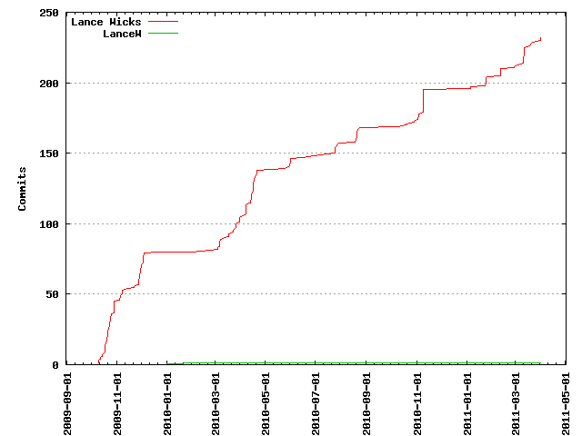
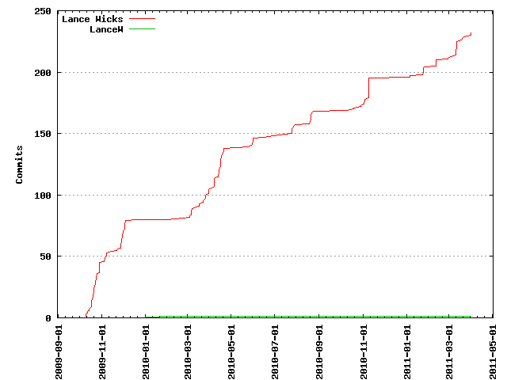

Authors
| Author | Commits (%) | + lines | - lines | First commit | Last commit | Age | Active days | # by commits |
|---|
| Lance Wicks | 232 (99.57%) | 134580 | 71937 | 2009-10-10 | 2011-04-01 | 537 days, 11:19:05 | 81 | 1 |
| LanceW | 1 (0.43%) | 2 | 2 | 2010-02-01 | 2010-02-01 | 0:00:00 | 1 | 2 |
 

| Month | Author | Commits (%) | Next top 5 | Number of authors |
|---|
| 2011-04 | Lance Wicks | 3 (100.00% of 3) | | 1 |
| 2011-03 | Lance Wicks | 17 (100.00% of 17) | | 1 |
| 2011-02 | Lance Wicks | 8 (100.00% of 8) | | 1 |
| 2011-01 | Lance Wicks | 9 (100.00% of 9) | | 1 |
| 2010-11 | Lance Wicks | 22 (100.00% of 22) | | 1 |
| 2010-10 | Lance Wicks | 5 (100.00% of 5) | | 1 |
| 2010-08 | Lance Wicks | 11 (100.00% of 11) | | 1 |
| 2010-07 | Lance Wicks | 9 (100.00% of 9) | | 1 |
| 2010-06 | Lance Wicks | 6 (100.00% of 6) | | 1 |
| 2010-05 | Lance Wicks | 4 (100.00% of 4) | | 1 |
| 2010-04 | Lance Wicks | 33 (100.00% of 33) | | 1 |
| 2010-03 | Lance Wicks | 24 (100.00% of 24) | | 1 |
| 2010-02 | LanceW | 1 (50.00% of 2) | Lance Wicks | 2 |
| 2009-12 | Lance Wicks | 12 (100.00% of 12) | | 1 |
| 2009-11 | Lance Wicks | 23 (100.00% of 23) | | 1 |
| 2009-10 | Lance Wicks | 45 (100.00% of 45) | | 1 |
| Year | Author | Commits (%) | Next top 5 | Number of authors |
|---|
| 2011 | Lance Wicks | 37 (100.00% of 37) | | 1 |
| 2010 | Lance Wicks | 115 (99.14% of 116) | LanceW | 2 |
| 2009 | Lance Wicks | 80 (100.00% of 80) | | 1 |
| Domains | Total (%) |
|---|
| judocoach.com | 233 (100.00%) |
|---|